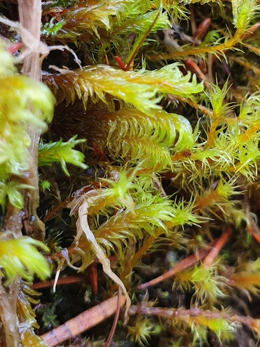

Calliergonaceae
Fen Moss Family (unofficial)
Calliergonaceae is a family of pleurocarpous mosses primarily found in wet, often nutrient-rich habitats like fens, swamps, and lake margins, particularly in boreal and arctic regions. These mosses typically form loose mats or submerged strands, often with pinnate branching and yellowish, golden, or reddish hues. A key characteristic is the presence of strongly differentiated alar cells at the leaf bases, which are usually large, inflated, thin-walled, and form distinct auricles (ear-like lobes).
Overview
The Calliergonaceae family comprises about 6-10 genera and 20-30 species, depending on taxonomic interpretation (it is very closely related to, and sometimes merged with, Amblystegiaceae). These mosses are characteristic components of northern wetland ecosystems, particularly minerotrophic fens (receiving nutrients from groundwater), but also occur in swamps, lake edges, pools, wet tundra, and springs. They are predominantly found in circumboreal, arctic, and alpine regions, extending into cooler temperate zones.
Plants in this family are pleurocarpous, often exhibiting regular pinnate branching, and can range from medium-sized to large and robust (e.g., Calliergon giganteum). They frequently display distinctive coloration, including shades of yellow-green, golden-brown, straw-yellow, or even deep red (Sarmentypnum). The most diagnostic feature, visible with a hand lens, is the group of large, clear, inflated alar cells forming conspicuous auricles at the basal corners of the leaves.
Ecologically, Calliergonaceae species can be significant peat-formers in fens and contribute substantially to the biomass of wetland vegetation. Their presence often indicates specific water chemistry and hydrological conditions. Phylogenetically, they belong to the large order Hypnales within the class Bryopsida.
Quick Facts
- Scientific Name: Calliergonaceae
- Common Name: Fen Moss Family (unofficial)
- Number of Genera: Approximately 6-10
- Number of Species: Approximately 20-30
- Distribution: Primarily circumboreal, arctic, alpine; extending into temperate regions.
- Habitat: Wet habitats, especially minerotrophic fens, swamps, lake margins, wet tundra.
- Evolutionary Group: Bryophytes - Mosses (Class: Bryopsida, Order: Hypnales)
Key Characteristics
Growth Form and Habit
Calliergonaceae are pleurocarpous mosses, forming loose to dense mats, extensive wefts, or growing submerged. Branching is often regularly pinnate, but can be irregular. Plants range from medium to large and robust, often with distinctive coloration (yellowish, golden, brownish, reddish).
Stems
Stems are creeping, ascending, or erect, often appearing tumid or julaceous (smoothly cylindrical) when leaves are appressed. Stems themselves may be green or reddish. Paraphyllia are absent.
Leaves
Leaves are typically broadly ovate, oblong-ovate, or somewhat cordate (heart-shaped) at the base, usually strongly concave. The leaf apex is characteristically obtuse or rounded, sometimes broadly pointed or with a small apiculus. The costa (midrib) is variable: typically single and strong, ending well below the apex (e.g., Calliergon, Warnstorfia, Sarmentypnum), OR it can be short and double or absent (e.g., Straminergon, Loeskypnum). Leaf cells are typically linear and smooth. The most diagnostic feature is the alar region: the cells at the basal corners of the leaves are strongly differentiated, large, thin-walled, hyaline (clear), and distinctly inflated, extending down the stem and forming conspicuous auricles (ear-like lobes).
Asexual Reproduction
Specialized asexual propagules are generally absent, though fragmentation is common, especially for aquatic or semi-aquatic species.
Sporophytes (Reproductive Structures)
Sporophytes arise laterally from stems. The capsule is elevated on a long, smooth seta. The capsule is typically cylindric or oblong-cylindric, usually curved and inclined to horizontal. The capsule wall is smooth. The peristome is double (diplolepidous) and of the typical Hypnalean type. The operculum (lid) is usually conic. Sporophytes are not consistently produced in all species or populations.
Habitat
Primarily found in wet to submerged conditions in minerotrophic (nutrient-richer) wetlands such as fens, swamps, lake and pond margins, ditches, springs, and wet tundra. Less common in highly acidic bogs dominated by Sphagnum.
Field Identification
Identifying Calliergonaceae relies on recognizing the pleurocarpous habit in wet habitats, combined with leaf shape, costa type (variable!), and especially the distinctive alar cells.
Primary Identification Features
- Habitat: Wet environments, particularly fens, swamps, lake margins (often minerotrophic).
- Growth Habit: Pleurocarpous mats or submerged strands, often pinnately branched, often robust, frequently yellowish, golden, or reddish.
- Alar Cells (Key Feature): Look at the leaf bases with a hand lens – presence of strongly differentiated, large, inflated, clear cells forming distinct auricles (ear-like lobes).
- Leaf Shape/Apex: Leaves often broad, concave, with obtuse or rounded apices (though some Warnstorfia are pointed).
- Costa: Variable by genus – check if single and strong (most genera) or short/double/absent (Straminergon, Loeskypnum).
Secondary Identification Features
- Branching Pattern: Often regularly pinnate.
- Sporophytes (if present): Cylindric, curved, inclined capsules on long, smooth setae.
Seasonal Identification Tips
- Year-round: The distinctive gametophytes, including the key alar cell features, are visible year-round. Coloration may vary seasonally.
- Sporophyte Timing: Sporophytes, when produced, typically mature in spring or summer.
Common Confusion Points
Calliergonaceae can be confused with other pleurocarpous mosses in wet habitats:
- Amblystegiaceae: Very closely related. Often differ in having narrower, more pointed leaves, less strongly differentiated/auriculate alar cells, and sometimes longer costas. Taxonomy is complex and boundaries blur.
- Hypnaceae (esp. Hypnum): Costa is short and double or absent, alar cells are different (often quadrate but not large inflated auricles), leaves often falcate.
- Brachytheciaceae: Leaves usually pointed, often plicate, costa ends mid-leaf, seta often rough, alar cells different.
- Drepanocladus / Scorpidium (Amblystegiaceae s.l.): Also in wet habitats, often have falcate leaves, alar cells can be inflated but structure differs from typical Calliergonaceae auricles.
Focus on the combination of wet habitat, often pinnate branching, broad/obtuse leaves (mostly), and especially the large, inflated, hyaline alar cells forming distinct auricles.
Field Guide Quick Reference
Look For:
- Habitat: Fens, swamps, wet tundra, lake margins
- Pleurocarpous mats/strands (often robust)
- Often pinnately branched
- Leaves broad, concave, often obtuse apex
- Alar cells large, inflated, hyaline, forming distinct auricles (Key!)
- Costa variable (strong single OR short/double/absent)
Key Variations:
- Color (yellow, green, golden, red)
- Costa type (defines genera)
- Leaf apex (obtuse vs. pointed in Warnstorfia)
- Branching density
Notable Examples
This family includes several ecologically important genera of wetlands:

Calliergon giganteum
Giant Calliergon / Giant Spear-moss
A large, robust, pinnately branched moss forming extensive mats in rich fens and swamps, often submerged. Leaves broadly ovate-cordate, obtuse apex, strong single costa ending below apex, very large distinct alar auricles. Often yellowish-green.

Warnstorfia fluitans
Floating Feather-moss / Floating Hook-moss
Common in acidic pools, ditches, and boggy areas, often floating. Plants slender to robust, green to reddish. Leaves lanceolate, often falcate-secund (curved), pointed apex. Costa single, strong. Alar cells inflated, forming distinct groups but sometimes less auriculate than Calliergon.

Sarmentypnum sarmentosum
(Red Bog-moss - unofficial)
Characteristic of alpine or arctic springs, flushes, and snowbeds. Forms striking deep red or purplish-red mats (sometimes green in shade). Regularly pinnate branching. Leaves ovate, concave, obtuse apex, strong single costa, distinct inflated alar auricles.

Straminergon stramineum
Straw Spear-moss
Forms pale, straw-yellow or whitish-green tufts or loose mats, often amongst Sphagnum in bogs and fens. Stems erect, sparsely branched. Leaves oblong-ovate, concave, obtuse apex. Distinctive for having the costa short and double or absent. Alar cells strongly differentiated, inflated, forming auricles.
Phylogeny and Classification
Calliergonaceae belongs to the class Bryopsida and the large order Hypnales, which encompasses most pleurocarpous mosses. Within Hypnales, Calliergonaceae is very closely related to the family Amblystegiaceae. The distinction between these two families is not always clear-cut, and some taxonomic treatments merge Calliergonaceae into a broader Amblystegiaceae.
Genera typically placed in Calliergonaceae (like Calliergon, Warnstorfia, Sarmentypnum, Straminergon) form a cohesive group in molecular analyses, often characterized by adaptations to wet, minerotrophic environments and the distinctive inflated alar cells. Whether recognized as a separate family or a subfamily/tribe within Amblystegiaceae, it represents a significant lineage within the Hypnales order.
Position in Plant Phylogeny
- Kingdom: Plantae
- Division: Bryophyta (Mosses)
- Class: Bryopsida
- Subclass: Bryidae
- Order: Hypnales
- Family: Calliergonaceae (or within Amblystegiaceae s.l.)
Evolutionary Significance
Calliergonaceae is significant for:
- Wetland Adaptation: Represents a major radiation of pleurocarpous mosses into nutrient-rich wetland environments (fens).
- Morphological Specialization: The strongly developed alar auricles are a notable morphological feature, likely related to water relations or ion exchange in their habitat.
- Indicator Species: Many species are valuable indicators of specific wetland types and water chemistry.
- Hypnales Diversity: Contributes to the understanding of ecological and morphological diversity within the vast Hypnales order.
- Taxonomic Complexity: Highlights the challenges in delimiting families based solely on morphology within large, closely related groups like the Amblystegiaceae/Calliergonaceae complex.